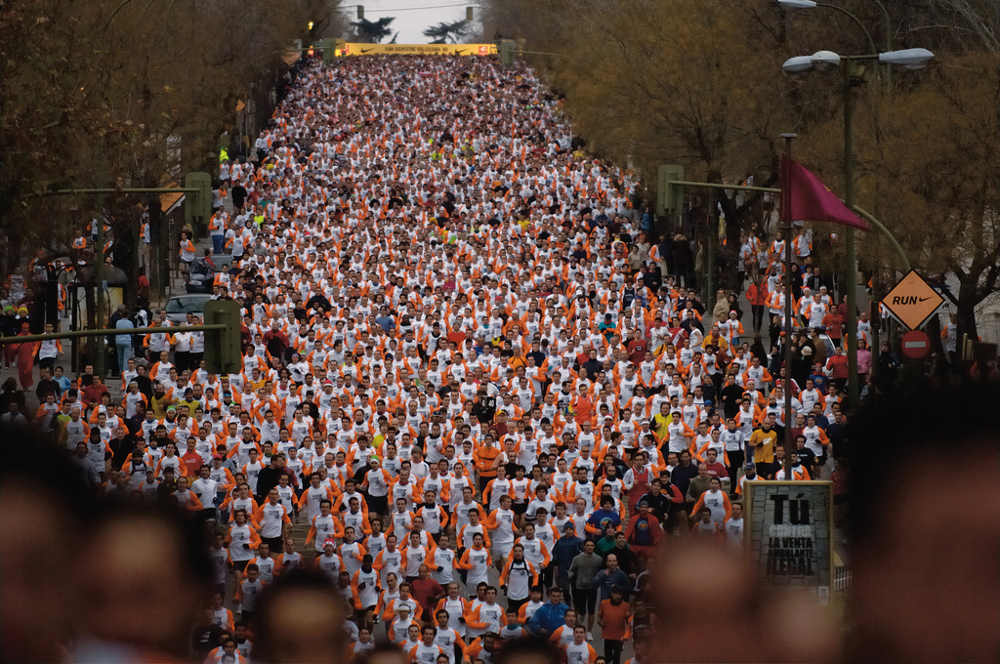
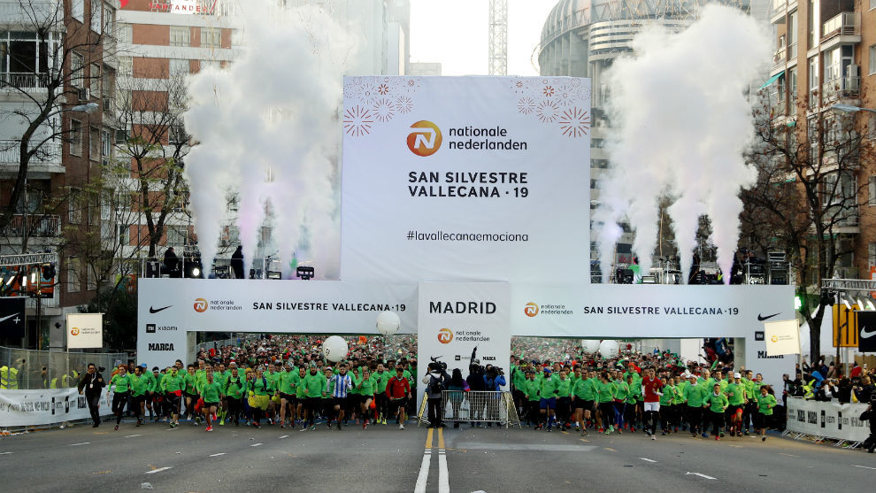
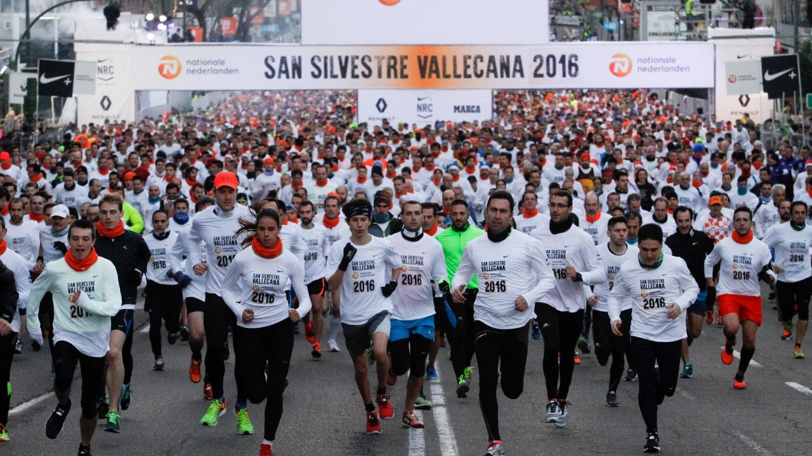
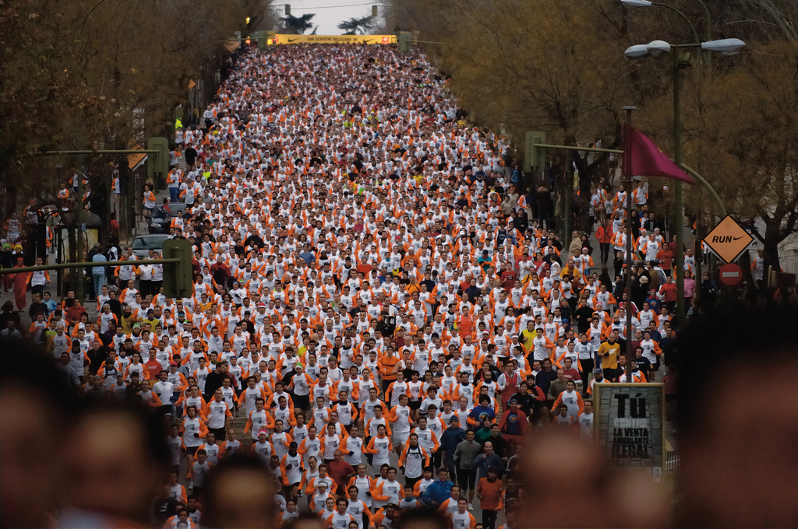
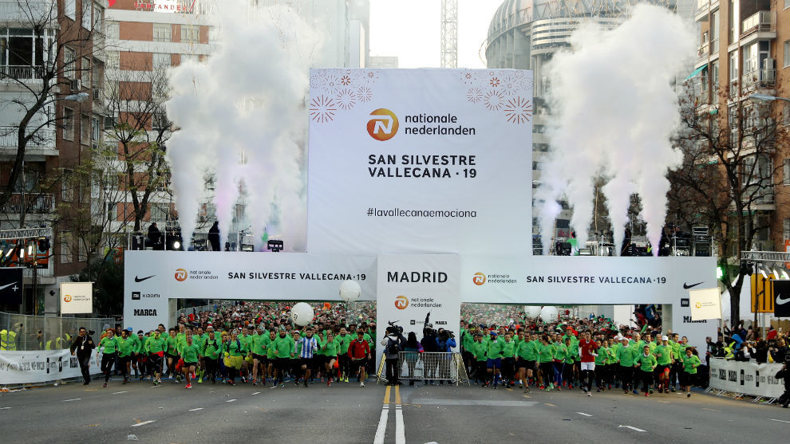
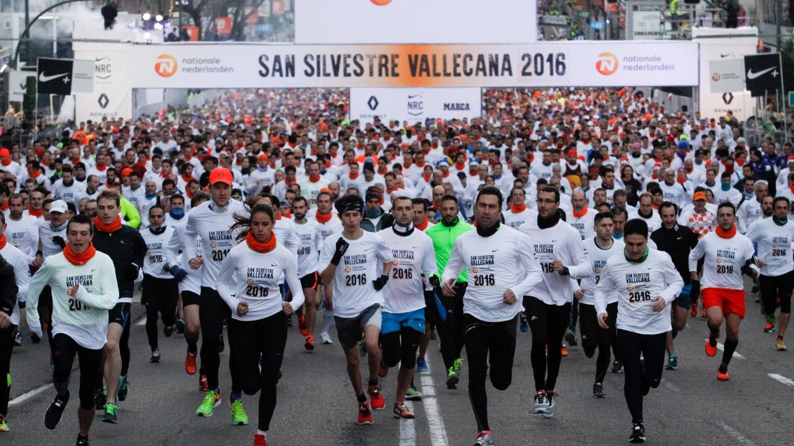

Seccion de Galeria Carrera Silvestre Vallecana
Carrera Silvestre Vallecana
Carrera Silvestre de Vallecana
Carrera Silvestre de Vallecana
Carrera Silvestre de Vallecana

Es una carrera que se celebra en Madrid su distancia es de 10 KM se celebra cada 31 de Diciemmbre, en el dia de San Silvestre. Hay dos ediciones una Popular la cual puede entrar toda la población mayor de 16 años y la edición San Silvestre Internacional (Para atletas con una marca inferior a 39' en Hombres y 45' en Mujer).
La prueba tiene un recorrido homologado de 10.000 metros totalmente urbanos y sobre superficie de asfalto. Las salidas se realizaran en varias oleadas succesivas
Primera salida 17:30h
Segunda salida 17:45h
Tercera Salida 18:00h
Ultima Salida 18:15h
La salida esta localizada en la calle Concha Espina esquina Plaza Sagrados Corazones y la meta esta ubicada en la calle Candilejas
Carrera Silvestre Vallecana
Carrera Silvestre de Vallecana
Carrera Silvestre de Vallecana
Carrera Silvestre de Vallecana
En la derecha he compartido un video retransmitido en directo de San Silvestre Vallecana de la edicion pasada de 2019 en especifico esta es la edicion Popular de la carrera la cual pueden participar gente de toda la Poblacion a partir de los 16 años aunque cabe destacar que podemos observar señoras corriendo con carritos de bebes.
A la derecha como podemos ver esta ilustrada la Tabla de los pasados Campeones y Campeonas de la pasada decada de la carrera San Silvestre Vallecana cabe destacar que esta seccion de capeones internacionales (atletas con una marca inferior a 39' en Hombres y 45' en Mujer)
| Campeon Masculino | Campeona Femenina | Año |
|---|---|---|
| Bashir Abdi | Helen Tola Bekele | 2019 |
| Jacob Kiplimo | Brigid kosgei | 2018 |
| Erik kiptanui | Gelete Burka | 2017 |
| Nguse Amlosom | Brigid Kosgei | 2016 |
| Mike Kigen | Linet Mesai | 2015 |
| Mike Kigen | Gemma Steel | 2014 |
| Leonard Patrick Komon | Linet Masai | 2013 |
| Tariku Bekele | Gelete Burka | 2012 |
| Gebriwet Hagos | Tirunesh Diababa | 2011 |
| Zeresenay Tadese | Jessica Augusto | 2010 |
A mi izquierda he insertado un enlace al canal general del Servidor de Discord de preguntas para los clientes.